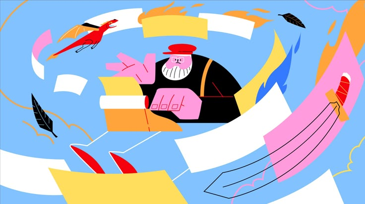
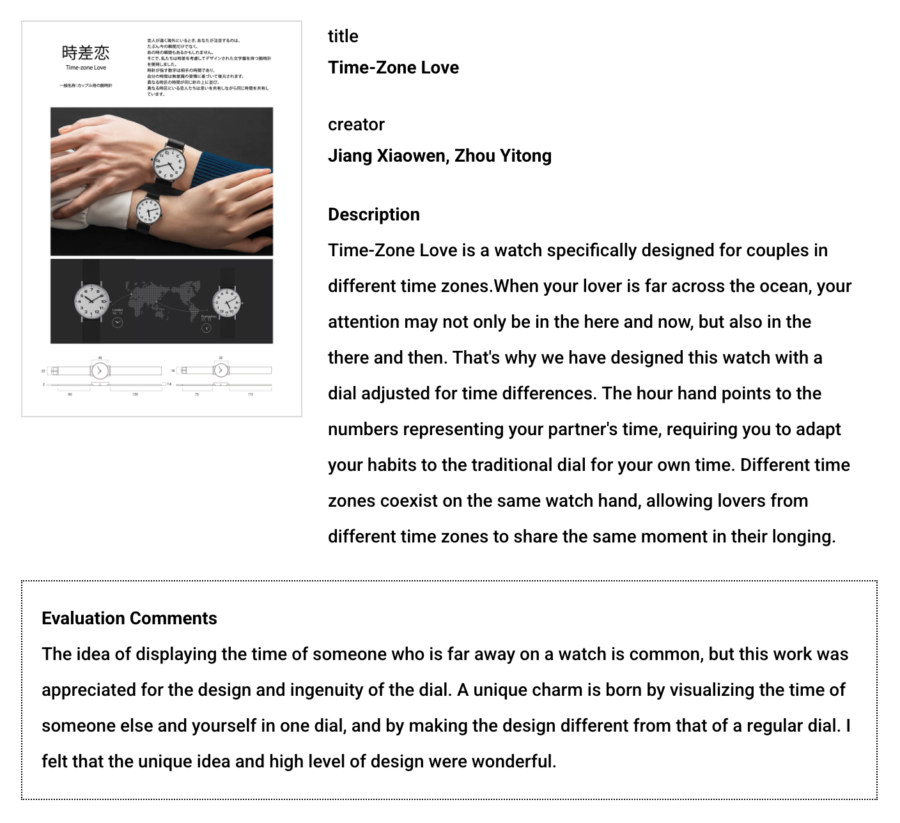
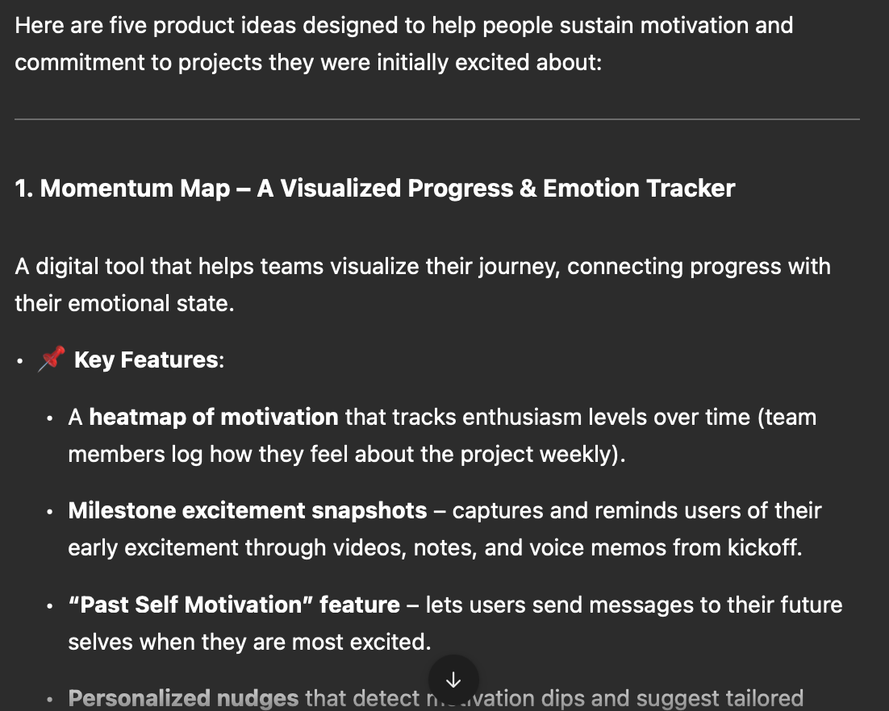
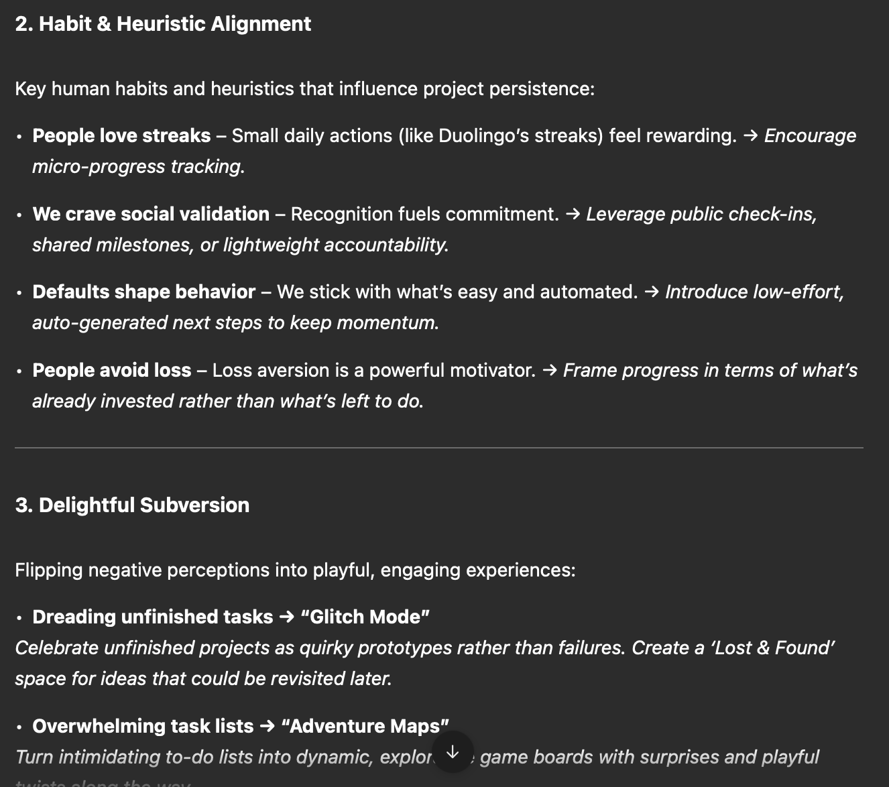

Continuing from my last post, I optimized the prompting strategies to allow LLMs dig into more nuanced connections to build a mindmap. This time, I decided to shift my focus–enabling LLMs to engage in emotional thinking.
What makes high-quality human-generated ideas stand out is our ability to understand psychological motivations that drive product adoption. While LLMs can generate creative concepts, they often fail to resonate emotionally in the way that strong human-generated ideas do.
To address this, I’m planning to incorporate a dedicated branch in the ideation process that prompts AI to explore emotional factors, ensuring that generated ideas are not only innovative but also deeply connected to human needs and desires.

Deep dive into the emotional aspect of human-generated ideas
When exploring the product ideas that won the Kokuyo Design Award, I was deeply moved by the level of humanistic consideration embedded in each design. Regardless of the emotion they represent(or seek to address), whether love, sadness, anxiety, or curiosity, these ideas always stem from an emotional core, with the product concept perfectly capturing that feeling.
Here’s a great example that illustrates this: This product is a watch designed for couples living in different time zones. Inspired by the frustration of coordinating across time differences, the watch elegantly solves this problem by visualizing two time zones within a single dial.
While multi-time-zone watches are not uncommon, this design stands out due to its ingenuity and emotional depth. The designer’s thoughtful approach goes beyond functionality—it acknowledges the nuanced emotions of distance and connection, making the product feel deeply personal and meaningful.

To create a “recipe” for generating ideas with humanistic touch and emotional depth, I started by analyzing several key aspects of it:
The idea originates from an emotional core: During brainstorming, we often generate numerous problem statements, but most remain surface-level, focusing on practical solutions rather than digging deeper into why the problem exists in the first place. However, a high-quality human-generated idea goes beyond simply accumulating advanced technology—it establishes a connection with the underlying emotional factors of the problem statement. This depth of understanding transforms a concept from merely functional to truly meaningful.
More than just designing a usable product, it creates a product that seamlessly aligns with human habits and intuitions. Humans rely on mental shortcuts, heuristics, and unconscious behaviors that shape how we interact with objects and technology. A well-designed product anticipates these natural tendencies, reducing cognitive load and making interactions feel effortless.
(Sometimes) It incorporates a moment of delight by introducing subtle abnormalities into conventional details. When things follow predictable patterns, they can become mundane, fading into the background. A well-designed product, however, breaks this expectation of normalcy, sparking surprise and joy in the process. No matter how ordinary an object can be, a great product idea has the ability to add a playful touch to make it into a “mini-game”.
Prompting AI to achieve the result
Having these insights in mind, I started working on prompt engineering. I first came up with prompting approaches one by one, and tried to combine them to form a comprehensive prompt that guides the LLM through various phases, including generating painpoints, refining them emotionally, and ensuring they address specific emotional needs or user pains.
Like what I did in the last post, I came up with some prompting strategies one by one, and integrated them strategically to form a comprehensive prompt:
- Prompting the LLM to identify core emotions behind the problem
Identify the core emotion(s) behind the problem: - What feelings (e.g., anxiety, longing, excitement) do people experience? - Why do these emotions arise?
- Using “Five whys”
- State the problem. Then, repeatedly ask “Why?”:
- 1st “Why?” peels back the immediate cause.
- 2nd “Why?” clarifies the underlying situation.
- 3rd “Why?” moves closer to emotional drivers.
- …continue until you uncover a more profound emotional truth or universal human desire.
- Summarize the deep emotional insight uncovered.
- Focusing on the holistic user experience, including what users see, feel, think, and do
Define the user persona: their environment, goals, and any known pain points.
Empathy map questions:
- THINK & FEEL: What are they worried about, excited about, or fearful of?
- SEE: What does their environment look like? What cues affect them emotionally?
- HEAR: What do friends, family, or media tell them?
- SAY & DO: How do they outwardly express their feelings, and what actions do they take?
- PAINS: What frustrations or difficulties are they facing?
- GAINS: What would relief, success, or emotional satisfaction look like?
- Encouraging LLMs to incorporate little twist of surprise, quirk, or abnormality that sparks joy and makes design feel extra special
- Identify the standard design approach or “norm” for a product type.
- Pinpoint a subtle, playful twist that could surprise and delight the user.
- It could be an unexpected animation, a tactile feature, or a playful way of providing feedback.
- Evaluate how that moment of delight aligns with the emotional core previously identified.
- Focusing the brainstorming on mental models, heuristics, and typical behaviors that make solutions feel natural
- List key human habits and heuristics relevant to the domain.
- e.g., people prefer consistency; they find comfort in routines; they like quick visual feedback.
- Brainstorm how the solution can integrate with or leverage these habits.
- e.g., a new feature that builds off an existing daily routine so users don’t have to consciously learn something new.
- Highlight where emotional resonance meets usability.
- e.g., how does this habit-based design reduce frustration or add an element of comfort?
- Identifying negative emotionalities and turning them into positive feelings
Identify 2–3 commonly negative or taboo perceptions or frustrations that might arise in this context. Then offer short suggestions for how they could be flipped into something playful, intriguing, or surprisingly positive. (e.g., turning ‘anxiety about deadlines’ into ‘fun countdown rituals’). Focus on concise, open-ended prompts that invite a human designer to explore
Master prompt
Context & Objectives “You are a design consultant specializing in emotionally resonant product innovation. Our aim is to explore new [product/service/feature] directions addressing [briefly describe the problem context]. We want to spark concepts that speak to emotional needs, feel intuitive, and introduce a delightful twist—especially by flipping negative associations into something intriguing or playful. Avoid fully detailed solutions; instead, give short, creative pointers.”
Emotional Seeds “Identify 3–5 core emotional root causes that lead to the problem. What feelings (e.g., anxiety, longing, excitement) do people experience? Why do these emotions arise? Present them as bullet points with brief explanations (e.g., ‘fear of letting others down,’ ‘need for recognition’).”
Habit & Heuristic Alignment “ List key human habits and heuristics relevant to the domain. (e.g., people prefer consistency; they find comfort in routines; they like quick visual feedback.) Then brainstorm directions of how the solution can integrate with or leverage these habits. (e.g., a new feature that builds off an existing daily routine so users don’t have to consciously learn something new.)”
Delightful Subversion “Identify 2–3 commonly negative or taboo perceptions or frustrations that might arise in this context. Then offer short suggestions for how they could be flipped into something playful, intriguing, or surprisingly positive. (e.g., turning ‘anxiety about deadlines’ into ‘fun countdown rituals’). Focus on concise, open-ended prompts that invite a human designer to explore.”
Generate Directions (Not Full Solutions) “Propose 3–5 conceptual ‘directions’ (just short phrases or quick bullet points) that combine elements from the emotional seeds, empathy map, habits, and delightful subversion. Keep these directions open-ended—enough to spark ideas, but without detailing exactly how to implement them.”
Refine & Inspire “Conclude by highlighting which direction(s) might carry the strongest emotional resonance or the most intriguing ‘delightful subversion.’ Offer a few inspiring questions or next-step prompts (not instructions) for the human to reflect on or build upon. Avoid prescribing a final design—just offer creative nudges.”
Results comparison
With standard prompting strategies, the product ideas tend to be more generic and abstract. Additionally, they are often fully fleshed out, leaving little room for human collaboration and iterative refinement.

However, with the modified master prompt, the ideation process unfolds step by step, generating more nuanced solutions that create opportunities for human input and creative expansion.

In the next post, I’ll be discussing prompting strategies that enable LLMs to comprehensively understand the affordances and constraints of products.